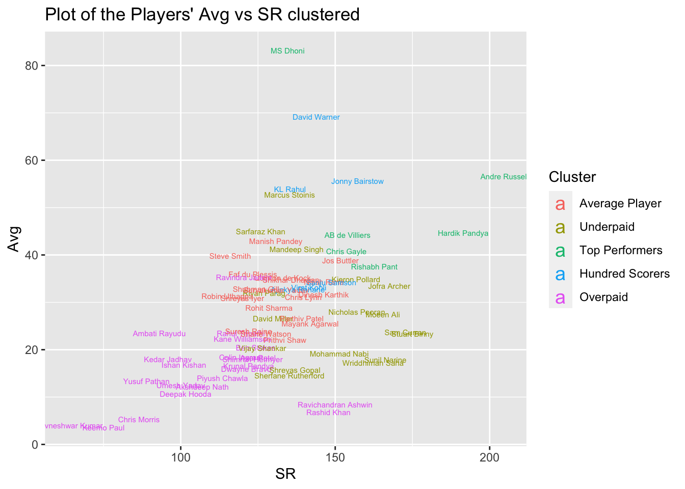

Here I explore the performance of the Indian Premier League batsmen in cricket. The dataset includes the popular performance metrics for 92 players: Average, Total Runs, Strike Rate, Hundreds, Fifties, Fours, Sixes, and salaries. In short, the higher the value of the metrics, the better a batsman is. The Average reflects the total number of runs scored divided by the number of innings in a season. The SR is calculated by dividing the number of runs scored by the number of balls faced and then multiplying by 100. It shows if a batsman scores runs at a faster pace. The rest of the metrics reflect the numbers of times a player scored, for example, fifty or more runs per inning. An inning is a team’s turn to bat.
I am analyzing the correspondence of the players’ pay and their performance. I am going to look at SR and Avg. These two metrics should be of critical meaning since they signal the relative performance. In other words, if we compare two player’s SR (Strikes Rate) rather than absolute scores, we can observe their ability to score high (runs per 100 balls faced). This is more clear than absolute numbers of runs, since batsmen have to be called to face the ball, which can skew the final number. The same could be said about Avg.
Data Exploration
Code
library(readxl)Cricket_Data <-read_excel("The Indian Premier League Supplemental Data.xlsx", sheet ="Sheet1", col_types =c("numeric", "skip", "text", "text", "numeric", "numeric", "numeric", "numeric", "numeric", "numeric", "numeric", "numeric"))
We observe a positive but weak correlation between Salary and most performance metrics. SR, however, has the lowest correlation.
I generate boxplots for both metrics with outliers named, so we can see the distribution of the data and the names of the players who score the highest. The limitation would be that we do not see other players. This can be overcome by sorting the data by our metrics and see who ends up above the mean or another threshold.
I know plot Avg vs SR, to see the distribution of players according to these metrics.
Code
Cricket_Data %>%ggplot(aes(x=SR, y=Avg)) +geom_text(aes(label = Player), size =2) +labs(title ="Plot of the Players' Avg vs SR")
Here we can identify the players with the highest combination of SR and Avg metrics. The closer the player is to the top right corner, the better performance he has, and reversely the closer he is to the bottom left, the worse their performance is. We can also observe that relatively few players have Avg above 40.
Clustering
I then perform cluster analysis to discover any subgroups within the dataset. I use a clustering method called kmeans, which uses the Euclidean distances to subset our datapoints.
We can see that Players cannot be meaningfully clustered by Teams. That is, the teams do not differ from each other based on the metrics presented.
I perform Elbow method to identify optimal number of Clusters.
I use factoextra functions for better visualization.
Code
set.seed(123)fviz_nbclust(df3, kmeans, method ="wss") +geom_hline(yintercept =190, linetype ="dashed", color ="red") +geom_hline(yintercept =230, linetype ="dashed", color ="brown")
Code
#should check if k=5 is good too
This chart shows that Total Within Sum of Squares drop rate decreases after 4 and even more so after 5 clusters. We can evaluate both cases and use Silhouette Method for further investigation.
Code
k4 <-kmeans(df3, centers =4, nstart =25)
Code
fviz_cluster(k4, data = df3)
Clusters are almost not overlapping. Cluster 1 is quite big compared to others.
Here are the cluster centers (means) and sizes of clusters.
Here is the plot for Average Silhouette Method. ASM determines how well each object lies within its cluster. A high average silhouette width signals a good clustering.
Code
fviz_nbclust(df3, kmeans, method ="silhouette") +geom_vline(xintercept =5, linetype ="dashed", color ="red")
Code
#abline(v = 5, col = "red", lty = "dashed")#seems k=5 is the second highest
According to the ASM plot, k=5 should be more optimal than k=4. I perform a new cluster analysis using 5 centers.
Code
k5 <-kmeans(df3, centers =5, nstart =25)fviz_cluster(k5, data = df3)
Here are the Cluster centers which we can interpret as means for each cluster (data is scaled).
We can observe the means of the produced clusters and check if the high average performance corresponds with higher or lower average salaries. This would help to identify clusters which contain underpaid or overpaid players.
In the given tables, we can observe that Cluster 3 has the top average salary of 1.63. The second highest earning cluster is Cluster 4. We can also observe that these clusters contain the highest performing players since their average performing metrics are the highest among the cluster. The exceptions are SR, where Cluster 2 is performing better than Cluster 4, taking second place, and Fours, where Cluster 1 performs better than Cluster 3, coming second. Otherwise, we can see that they are the top performers and thus the top earners. Their performance in the key metrics is, on average, in the top 3 (even top 2, mostly) and have the highest average salaries. Even their minimums in Avg and SR are as high as average values of most other clusters, if not higher. The 6 players in Cluster 4 are the only ones scoring Hundreds, separating them from the 6 players of Cluster 3. We can therefore identify them as 12 top performers and top earners. Therefore, we can call the Cluster 3 “Top Performers” and Cluster 4 “Hundred Scorers”.
The other cluster is Cluster 1. We can call them as the “Average Player”. They are the second most populous cluster and perform average. Their metrics is in the middle between most of the Clusters, except SR (they are 3rd) and Fours (2nd). We can also identify them as average since they get the average pay. We can see that in the scaled cluster centers, where the closer the value is to 0, the closer it is to the mean.
The remaining two clusters are 2 and 5. Interestingly, we can see that Cluster 2 overperforms Cluster 5 by all metrics but gets the lowest salary on average (0.52 vs 0.89). Not only that, Cluster 5, on average, performs worse than any other cluster but the salary is very close to the pay of Cluster “Average” (0.89 and 0.91). It is also worth noticing that Cluster 2 performs the 2nd best by SR, one of the key metrics Mitra is interested in. All this indicates that Cluster 2 is underpaid. Thus, I call cluster 5 “Overpaid” and Cluster 2 “Underpaid”.
Parallel Coordinate Plot for Cluster interpretation
To better analyze and compare the clusters I use Parallel Coordinate Plot to see the Cluster centers (means) all at the same time. In this plot the higher values of the metrics are, the better. It means that high metrics values should be followed by high salary.
Hundreds Variable skews the view a little, so I remove it from the plot but keep in mind that only “Hundred Scorers” cluster (Blue) has players who scored Hundreds.
We can observe that Clusters Top Performers and Hundred Scorers perform generally well and earn higher than average salaries. Cluster Average Player is somewhat in the middle and earns average salary. Most interestingly, Clusters Underpaid and Overpaid on average perform the worst but the Underpaid plays better than the Overpaid by all metrics and even has the second highest SR yet earns the least. This happens while the Overpaid earns as much as Average Player. It should also be noticed that the scaled average salaries of the Clusters Average Player, Top Performers, and Hundred Scorers are in the vicinity of the scaled Avg and SR, whereas the Clusters Underpaid and Overpaid are not. This might again indicate that players are underpaid and overpaid in the respective clusters, on average.
I also show the cluster centers separately side by side.
I create Parallel Coordinate Plot to identify the differences when we use 4 clusters instead of 5.
Code
ggparcoord(data = dplyr::select(k4centers, -Hundreds),columns =c(2:8),groupColumn ="cluster",scale ="globalminmax") +geom_line(size =1) +labs(title ="Parallel Coordinate Plot of Cluster Centers by Variables")
Here we can observe that Cluster Analysis with only 4 centers merges two worst performing Clusters together, so we do not see underpaid players. I, therefore, suggest sticking with 5 clusters.
These are average values, so we might want to look at the individual data.
The lines intertwine in some places but generally stay within its cluster. Most intertwining happens in the Salary. There is also some between Clusters 1 and 2 in Avg and SR metrics.
Code
Cricket_Data %>%bind_cols(as.factor(clusterdf$`k5$cluster`)) %>%rename(cluster = ...12) %>%#`k5$cluster` is renamed into ...12ggplot(aes(x=SR, y=Avg)) +geom_text(aes(label = Player, color = cluster), size =2) +scale_color_discrete(name ="Cluster",labels =c("Average Player", "Underpaid", "Top Performers", "Hundred Scorers","Overpaid")) +guides(color =guide_legend(override.aes =list(size =5))) +#size=5 overrides the size of colored letters in legendggtitle("Plot of the Players' Avg vs SR clustered")
New names:
• `` -> `...12`

Here we can also observe separation of the key metrics by clusters and that Cluster Underpaid is closer to Average Player than Overpaid Cluster. In other words, it has higher SR and Avg than Overpaid clusters, but their salary does not reflect that.
Conclusion
I suggest reevaluating the pay of the players from Cluster 2. The Teams might also reconsider the salaries of the players from Cluster 5 who perform the worst but get paid the average rate. The cluster centers showed the average performance of the players from the same subgroups but a more individual evaluation should take place before the final decision.
Source Code
---title: "Cluster Analysis IPL"execute: freeze: autoformat: html: code-fold: show code-tools: true---```{r setup, include=FALSE}knitr::opts_chunk$set(echo =TRUE)```## InstroductionHere I explore the performance of the Indian Premier League batsmen in cricket. The dataset includes the popular performance metrics for 92 players: Average, Total Runs, Strike Rate, Hundreds, Fifties, Fours, Sixes, and salaries. In short, the higher the value of the metrics, the better a batsman is. The Average reflects the total number of runs scored divided by the number of innings in a season. The SR is calculated by dividing the number of runs scored by the number of balls faced and then multiplying by 100. It shows if a batsman scores runs at a faster pace. The rest of the metrics reflect the numbers of times a player scored, for example, fifty or more runs per inning. An inning is a team's turn to bat.I am analyzing the correspondence of the players' pay and their performance. I am going to look at SR and Avg. These two metrics should be of critical meaning since they signal the relative performance. In other words, if we compare two player’s SR (Strikes Rate) rather than absolute scores, we can observe their ability to score high (runs per 100 balls faced). This is more clear than absolute numbers of runs, since batsmen have to be called to face the ball, which can skew the final number. The same could be said about Avg.## Data Exploration```{r}library(readxl)Cricket_Data <-read_excel("The Indian Premier League Supplemental Data.xlsx", sheet ="Sheet1", col_types =c("numeric", "skip", "text", "text", "numeric", "numeric", "numeric", "numeric", "numeric", "numeric", "numeric", "numeric"))``````{r libraries for descriptibe stats}library(psych) #describe()library(summarytools) #descr()```Here is a quick preview of the dataset:```{r}head(Cricket_Data)```Here we can see a table of descriptive statistics for the performance metrics:```{r stats}descr(Cricket_Data[, -c(1,2,3)], #without ...1, Player, Teamstats =c("mean", "sd","med", "min", "max"), transpose =TRUE)``````{r libraries for plotting and wrapping, results = 'hide'}library(ggplot2)library(tidyverse)```Here I plot the Salary against the Avg.```{r}Cricket_Data %>%ggplot(aes(x=Avg, y=Salary)) +geom_point() +geom_smooth()```We can see that generally a higher Avg is associated with higher salary.I now plot SR against the Salary.```{r}Cricket_Data %>%ggplot(aes(x=SR, y=Salary)) +geom_point() +geom_smooth()```Here we can observe almost no visual relationship between the two.I then build a simple correlation matrix to see which metrics are highly correlated with salary:```{r Correlation Matrix for Salary}Cricket_Data[, -c(1,2,3)] %>%cor() %>%as.data.frame() %>% dplyr::select(Salary) |>arrange(desc(Salary))```We observe a positive but weak correlation between Salary and most performance metrics. SR, however, has the lowest correlation.I generate boxplots for both metrics with outliers named, so we can see the distribution of the data and the names of the players who score the highest. The limitation would be that we do not see other players. This can be overcome by sorting the data by our metrics and see who ends up above the mean or another threshold.```{r Avg boxplot}Cricket_Data %>%ggplot(aes(x="", y=Avg)) +geom_boxplot() +geom_jitter(color="black", size=0.4, alpha=0.9) +geom_text(data =subset(Cricket_Data, Avg>60), aes(label = Player)) +ggtitle("Boxplot for Avg")```We can see that these two players have the highest Avg.```{r SR boxplot}Cricket_Data %>%ggplot(aes(x="", y=SR)) +geom_boxplot() +geom_jitter(color="black", size=0.4, alpha=0.9) +geom_text(data =subset(Cricket_Data, SR>180), aes(label = Player))+ggtitle("Boxplot for SR")```The other two have the highest SR.I know plot Avg vs SR, to see the distribution of players according to these metrics.```{r plotting SR vs Avg}Cricket_Data %>%ggplot(aes(x=SR, y=Avg)) +geom_text(aes(label = Player), size =2) +labs(title ="Plot of the Players' Avg vs SR")```Here we can identify the players with the highest combination of SR and Avg metrics. The closer the player is to the top right corner, the better performance he has, and reversely the closer he is to the bottom left, the worse their performance is. We can also observe that relatively few players have Avg above 40.## ClusteringI then perform cluster analysis to discover any subgroups within the dataset. I use a clustering method called kmeans, which uses the Euclidean distances to subset our datapoints.```{r libraries for clustering}#library(tidyverse) # data manipulationlibrary(cluster) # clustering algorithmslibrary(factoextra) # clustering algorithms & visualization (fviz...)```I remove the variables Team and "...1" in the data.```{r}df =select(Cricket_Data, -Team, -"...1")```I set the Players' names as rownames to label the datapoints for better vizualization.```{r}df2 =column_to_rownames(df, "Player")```I check clustering without scaling the data first.```{r checking clusters without scaling}set.seed(123)k4.2<-kmeans(df2, centers =4, nstart =25)fviz_cluster(k4.2, data = df2)```As we can see, unscaled data overlaps signficantly.I standardize the data for better clustering using scale() function.```{r scaling}df3 =as.data.frame(scale(df2))```I check the scaling:```{r checking scale}#check scaling. Mean should be 0 and Std 1.descr(df3, stats =c("mean", "sd","med", "min", "max"), transpose =TRUE)``````{r kmeans clustering with 2 centers}k2 <-kmeans(df3, centers =2, nstart =25)```I visualize initial kmeans clustering with 2 clusters.```{r}fviz_cluster(k2, data = df3)```I plot Clusters by Teams to see if it produces any insight.```{r clustering with Teams}fviz_cluster(object =list(data = df3, cluster = Cricket_Data$Team),geom ="point",show.clust.cent =FALSE)```We can see that Players cannot be meaningfully clustered by Teams. That is, the teams do not differ from each other based on the metrics presented. I perform Elbow method to identify optimal number of Clusters.```{r algo for Elbow method, echo=FALSE, results='hide'}set.seed(123)# function to compute total within-cluster sum of square wss <-function(k) {kmeans(df3, k, nstart =25 )$tot.withinss}# Compute and plot wss for k = 1 to k = 15k.values <-1:15# extract wss for 2-15 clusterswss_values <-map_dbl(k.values, wss)plot(k.values, wss_values,type="b", pch =19, frame =FALSE, xlab="Number of clusters K",ylab="Total within-clusters sum of squares")```I use factoextra functions for better visualization.```{r Elbow Method with fviz_nbclust}set.seed(123)fviz_nbclust(df3, kmeans, method ="wss") +geom_hline(yintercept =190, linetype ="dashed", color ="red") +geom_hline(yintercept =230, linetype ="dashed", color ="brown")#should check if k=5 is good too```This chart shows that Total Within Sum of Squares drop rate decreases after 4 and even more so after 5 clusters. We can evaluate both cases and use Silhouette Method for further investigation.```{r}k4 <-kmeans(df3, centers =4, nstart =25)``````{r Plot for 4 Clusters with fviz}fviz_cluster(k4, data = df3)```Clusters are almost not overlapping. Cluster 1 is quite big compared to others.Here are the cluster centers (means) and sizes of clusters.```{r}k4$centersk4$size```Here is the plot for Average Silhouette Method. ASM determines how well each object lies within its cluster. A high average silhouette width signals a good clustering.```{r silhouette with fviz}fviz_nbclust(df3, kmeans, method ="silhouette") +geom_vline(xintercept =5, linetype ="dashed", color ="red")#abline(v = 5, col = "red", lty = "dashed")#seems k=5 is the second highest ```According to the ASM plot, k=5 should be more optimal than k=4. I perform a new cluster analysis using 5 centers.```{r k5 analysis with 5 clusters}k5 <-kmeans(df3, centers =5, nstart =25)fviz_cluster(k5, data = df3)```Here are the Cluster centers which we can interpret as means for each cluster (data is scaled).```{r}k5$centers```I create a combined dataset with the cluster numbers as variables.```{r creating df with cluster indices as variable}#creating df with cluster indices as variableclusterdf =as.data.frame(k5$cluster)``````{r Adding cluster indices and creating df4}#Adding cluster indices and creating df4df4 = df2 %>%bind_cols(clusterdf) %>%bind_cols(Cricket_Data$Team) %>%rename(cluster =`k5$cluster`) %>%rename(Team ="...10")``````{r structure of df4}#structure of df4str(df4)```Here are the descriptive statistics for each cluster (data is unscaled).```{r Stats for Clusters}stby(data = df4,INDICES = df4$cluster, # by clustersFUN = descr, # descriptive statistics from summarytoolsstats =c("mean", "sd","med", "min", "max"), transpose =TRUE)```We can observe the means of the produced clusters and check if the high average performance corresponds with higher or lower average salaries. This would help to identify clusters which contain underpaid or overpaid players.In the given tables, we can observe that Cluster 3 has the top average salary of 1.63. The second highest earning cluster is Cluster 4. We can also observe that these clusters contain the highest performing players since their average performing metrics are the highest among the cluster. The exceptions are SR, where Cluster 2 is performing better than Cluster 4, taking second place, and Fours, where Cluster 1 performs better than Cluster 3, coming second. Otherwise, we can see that they are the top performers and thus the top earners. Their performance in the key metrics is, on average, in the top 3 (even top 2, mostly) and have the highest average salaries. Even their minimums in Avg and SR are as high as average values of most other clusters, if not higher. The 6 players in Cluster 4 are the only ones scoring Hundreds, separating them from the 6 players of Cluster 3. We can therefore identify them as 12 top performers and top earners. Therefore, we can call the Cluster 3 “Top Performers” and Cluster 4 “Hundred Scorers”.The other cluster is Cluster 1. We can call them as the “Average Player”. They are the second most populous cluster and perform average. Their metrics is in the middle between most of the Clusters, except SR (they are 3rd) and Fours (2nd). We can also identify them as average since they get the average pay. We can see that in the scaled cluster centers, where the closer the value is to 0, the closer it is to the mean.The remaining two clusters are 2 and 5. Interestingly, we can see that Cluster 2 overperforms Cluster 5 by all metrics but gets the lowest salary on average (0.52 vs 0.89). Not only that, Cluster 5, on average, performs worse than any other cluster but the salary is very close to the pay of Cluster “Average” (0.89 and 0.91). It is also worth noticing that Cluster 2 performs the 2nd best by SR, one of the key metrics Mitra is interested in. All this indicates that Cluster 2 is underpaid. Thus, I call cluster 5 “Overpaid” and Cluster 2 “Underpaid”.## Parallel Coordinate Plot for Cluster interpretation```{r creating cluster center df called k5centers}k5centers = k5$centers %>%as.data.frame() %>%rownames_to_column(var ="cluster")``````{r libraries for parallel coordinate plots, results='hide', message=FALSE, warning=FALSE}library(GGally) #ggparcoordlibrary(plotly)library(MASS) #parcoord```To better analyze and compare the clusters I use Parallel Coordinate Plot to see the Cluster centers (means) all at the same time. In this plot the higher values of the metrics are, the better. It means that high metrics values should be followed by high salary.```{r PCP of Cluster Centers including Hundreds}ggparcoord(data = k5centers,columns =c(2:9),groupColumn ="cluster",scale ="globalminmax") +geom_line(size =1) +scale_color_discrete(name ="Cluster",labels =c("Average Player", "Underpaid", "Top Performers", "Hundred Scorers","Overpaid")) +labs(title ="Parallel Coordinate Plot of Cluster Centers by Variables")```Hundreds Variable skews the view a little, so I remove it from the plot but keep in mind that only "Hundred Scorers" cluster (Blue) has players who scored Hundreds.```{r PCP excluding Hundreds}ggparcoord(data = dplyr::select(k5centers, -Hundreds), #MASS masks selectcolumns =c(2:8),groupColumn ="cluster",scale ="globalminmax") +geom_line(size =1) +scale_color_discrete(name ="Cluster",labels =c("Average Player", "Underpaid", "Top Performers", "Hundred Scorers","Overpaid")) +labs(title ="Parallel Coordinate Plot of Cluster Centers by Variables")```We can observe that Clusters Top Performers and Hundred Scorers perform generally well and earn higher than average salaries. Cluster Average Player is somewhat in the middle and earns average salary. Most interestingly, Clusters Underpaid and Overpaid on average perform the worst but the Underpaid plays better than the Overpaid by all metrics and even has the second highest SR yet earns the least. This happens while the Overpaid earns as much as Average Player. It should also be noticed that the scaled average salaries of the Clusters Average Player, Top Performers, and Hundred Scorers are in the vicinity of the scaled Avg and SR, whereas the Clusters Underpaid and Overpaid are not. This might again indicate that players are underpaid and overpaid in the respective clusters, on average.I also show the cluster centers separately side by side.```{r PCP for each cluster spearately}ggparcoord(data = k5centers,columns =c(2:9),groupColumn ="cluster",scale ="globalminmax") +facet_wrap(~ cluster) +labs(title ="Cluster Centers by Variables")``````{r PCP for each cluster spearately without Hundreds}ggparcoord(data = dplyr::select(k5centers, -Hundreds),columns =c(2:8),groupColumn ="cluster",scale ="globalminmax") +facet_wrap(~ cluster) +labs(title ="Cluster Centers by Variables without Hundreds")``````{r}k4centers = k4$centers %>%as.data.frame() %>%rownames_to_column(var ="cluster")```I create Parallel Coordinate Plot to identify the differences when we use 4 clusters instead of 5.```{r PCP for Clusters with 4 centers}ggparcoord(data = dplyr::select(k4centers, -Hundreds),columns =c(2:8),groupColumn ="cluster",scale ="globalminmax") +geom_line(size =1) +labs(title ="Parallel Coordinate Plot of Cluster Centers by Variables")```Here we can observe that Cluster Analysis with only 4 centers merges two worst performing Clusters together, so we do not see underpaid players. I, therefore, suggest sticking with 5 clusters.These are average values, so we might want to look at the individual data.```{r}df5 = df3 %>%bind_cols(clusterdf) %>%rename(cluster =`k5$cluster`)``````{r}dplyr::select(df5, -Hundreds) %>%#MASS masks selectmutate_at(vars("cluster"), as.factor) %>%#needs to factor clusterggparcoord(columns =c(1:7),groupColumn ="cluster",scale ="globalminmax") +geom_line(size =0.5) +scale_color_manual(values =c("red", "green", "blue", "orange", "black")) +labs(title ="Parallel Coordinate Plot of Cluster Centers by Variables")``````{r}dplyr::select(df5, -Hundreds) %>%#MASS masks selectmutate_at(vars("cluster"), as.factor) %>%ggparcoord(columns =c(1:7),groupColumn ="cluster",scale ="globalminmax") +geom_line(size =0.5) +scale_color_manual(values =c("red", "green", "blue", "orange", "black")) +facet_wrap(~ cluster) +labs(title ="Parallel Coordinate Plot of Cluster Centers by Variables")```The lines intertwine in some places but generally stay within its cluster. Most intertwining happens in the Salary. There is also some between Clusters 1 and 2 in Avg and SR metrics.```{r}Cricket_Data %>%bind_cols(as.factor(clusterdf$`k5$cluster`)) %>%rename(cluster = ...12) %>%#`k5$cluster` is renamed into ...12ggplot(aes(x=SR, y=Avg)) +geom_text(aes(label = Player, color = cluster), size =2) +scale_color_discrete(name ="Cluster",labels =c("Average Player", "Underpaid", "Top Performers", "Hundred Scorers","Overpaid")) +guides(color =guide_legend(override.aes =list(size =5))) +#size=5 overrides the size of colored letters in legendggtitle("Plot of the Players' Avg vs SR clustered")```Here we can also observe separation of the key metrics by clusters and that Cluster Underpaid is closer to Average Player than Overpaid Cluster. In other words, it has higher SR and Avg than Overpaid clusters, but their salary does not reflect that.## ConclusionI suggest reevaluating the pay of the players from Cluster 2. The Teams might also reconsider the salaries of the players from Cluster 5 who perform the worst but get paid the average rate. The cluster centers showed the average performance of the players from the same subgroups but a more individual evaluation should take place before the final decision.